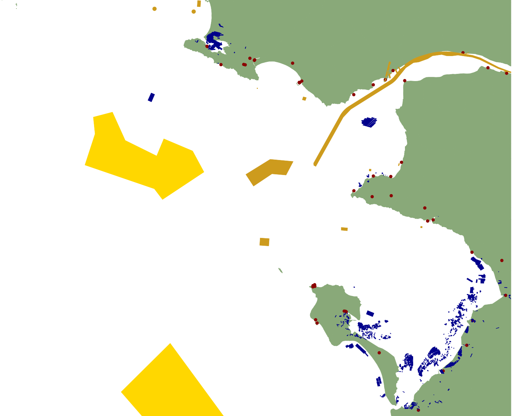
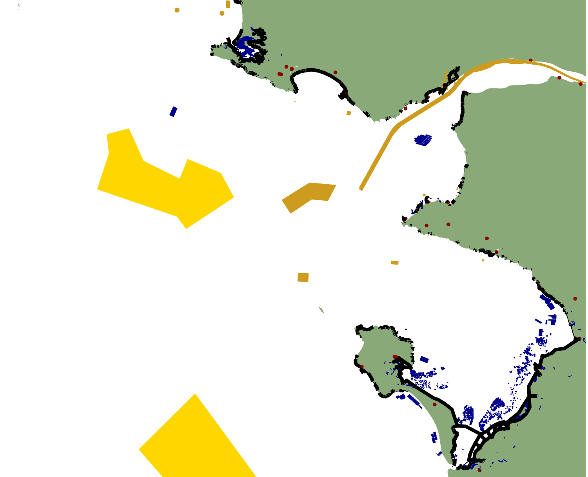
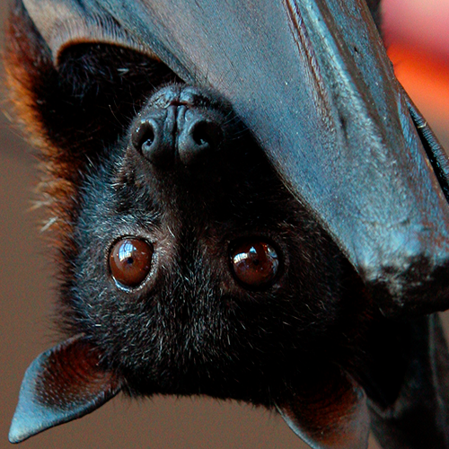
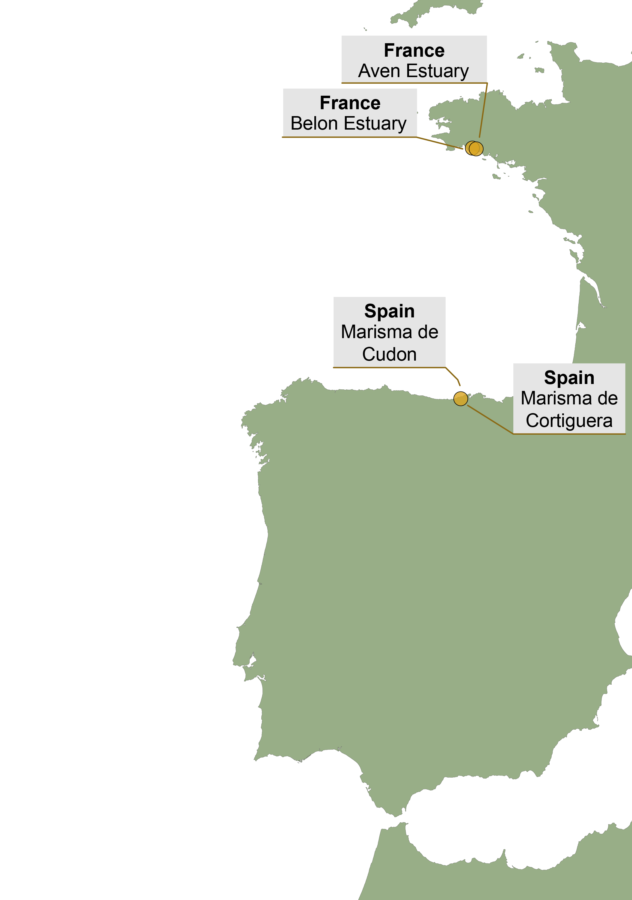
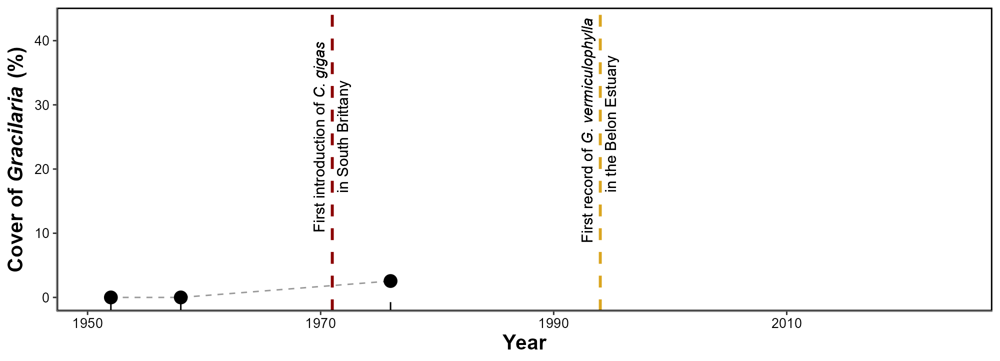
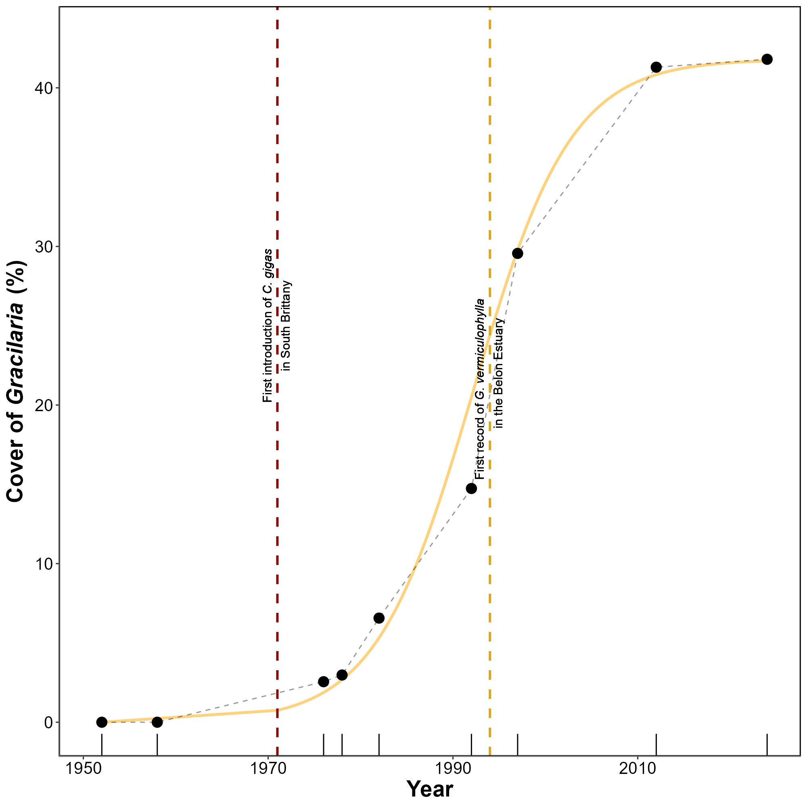
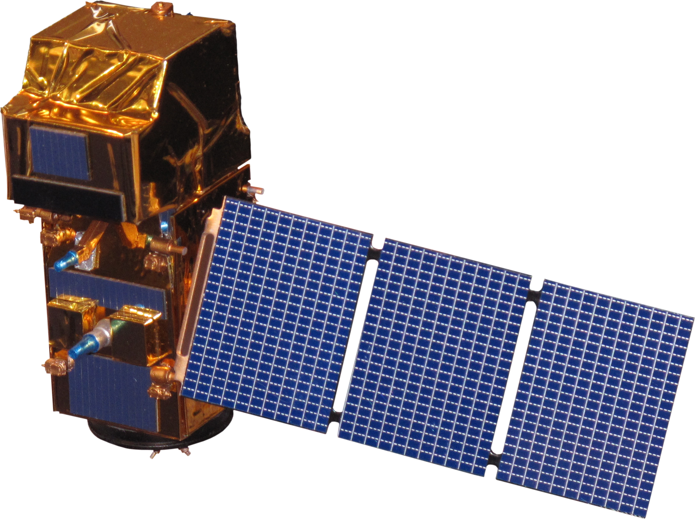

Country | Site | Absent | Present | Total |
|---|---|---|---|---|
France | Aven Estuary | 1,073 | 463 | 1,536 |
France | Belon Estuary | 1,389 | 443 | 1,832 |
Spain | Marisma de Cortiguera | 1,531 | 483 | 2,014 |
Spain | Marisma de Cudón | 1,237 | 136 | 1,373 |
| Total | 5,230 | 1,525 | 6,755 |
Preface


Remote Sensing, Benthic Ecology and Ecotoxicology

- Benthic ecology and shellfish aquaculture
- Biodiversity of benthic primary producers
- Hyperspectral, multispectral and drone remote sensing
- Ecotoxicology and emerging pollutants
- Marine optics and ocean colour remote sensing
PhD related projects

BiCOME Project
2021-2024
- Develop Observation tools
- Assess impacts of land/sea use, pollution and climate change
- identify regions of resilience or sensitivity
Project funded by:


REWRITE Project
2024-Actual
Aims to revitalize Europe’s intertidal areas through rewilding, promoting climate resilience, biodiversity, and societal benefits along the European shoreline.
Project funded by:


InvaSea Project
2024-Actual
- Assessing the Capacity of Remote Sensing to Map Invasive Red Algae
- Mapping G. vermiculophylla along the French coastline
Project funded by:

Coastal Environments
Areas where the land masses meet the seas


- Directly in contact with the sea
- 25km away from the sea
- 50km away from the sea
- French Coast are densly populated:
- 4% of the french territory
- 10% of the french population
- Globaly:
Source: Cosby et al. (2024) , Reimann et al., (2023)
1 billion people (15%) within 10km (4%)
~3 billion by 2100
Human activities
Hotspots of Economic Growth





Seaport
Dredging
Aquaculture
Energy Production
Artificialization
- Fishing activities
- Tourism
- Industries
- …
Environmental Impacts
The mark of human activity on nature


Oil spills
Erosion
Alien Species Introduction
Energy introduction
Habitat destruction
- Fishing activities
- Pollutions
- …
Intertidal habitats
Living on the edge of land and sea


Saltmarshes
Mangroves
Polychaete reefs
Rocky reefs
Tidal flats
Oyster reefs
A rich variety of intertidal habitats
Soft-bottom substrats
Guadalquivir River, Spain
- A - Magnoliopsida
- B - Bacillariophyceae
- C - Phaeophyceae
- D - Florideophyceae
- E - Chlorophyceae
Five Taxonomic Classes
of Vegetation
Hard-bottom substrats
Vigo, Spain


Saja estuary, Spain
Ecosystem Services
- Protection against Erosion
- Carbon fixation
- Nursery & Shelter
- Nutrient Fixation
~ $30 trillion per year
Protect these ecosystems:
- Habitat Directive (1992)
- Water framework Directive (2001)
- Marine Strategy Framework Directive (2008)
- Birds Directive (2009)
- Nature Restoration Law (2024)


Good knowledge and monitoring to inform policies

Remote Sensing
A tool to map them all !
Traditional sampling methods:
- Expensive
- Time consuming
- Low extent and temporal resolution
- Hard to access
Remote Sensing:
- Cost effective
- Good coverage/Time ratio
- Synchronous broad-scale view
- Simplifies the field work
From the sky to the sea
The science of obtaining information about objects or areas from a distance




Applyed to Earth Observation:

Remote Sensing
From the sky to the sea
Resolution Trade-offs

Sentinel-2
Drone
10–60 m spatial resolution
100 000 km²/image
5-day revisit
cm resolution
Adapted to small-scale studies
Flight planning flexibility
Fieldwork remains essential to make sense of what satellites see
Radiometric calibration
Aven, France

Ground truthing
Noirmoutier, France

Features georeferencing
Tainaron, Greece
Sampling
Cadiz, Spain
Monitoring coastal change from space
Coastal Remote Sensing: A trendy topic !
- Standardized measurements or indicators to monitor biodiversity
- Adapted for remote sensing applications


Challenges to map intertidal vegetation
Introduction to Spectroradiometry


\[R(\lambda) = \frac{L_{\text{up}}(\lambda)}{L_{\text{down}}(\lambda)}\]
- \(\lambda\) is the Wavelenght
- \(L_{\text{up}}\) is the upwelling radiance
- \(L_{\text{down}}\) is the downwelling radiance
\[R_i^*(\lambda) = \frac{R_i(\lambda) - \min(R_i)}{\max(R_i) - \min(R_i)}\]
- \(R_i(\lambda)\) is the reflectance the the wavelength \(\lambda\) of the spectrum \(R_i\)
- \(min(R_i)\) and \(max(R_i)\) are the minimum and maxium reflectance of the spectrum \(R_i\)
- Each spectrum is between 0 and 1


ASD FieldSpec Handheld 2
Hyperspectral Sensor
A lot of Narrow Spectral Bands


- Is it possible to discriminate green macrophytes using remote sensing techniques ?
- What is the impact of the spectral resolution on the discrimination accuracy ?
Material & Methods


Building a Spectral library of intertidal vegetation
Total of 332 Spectra of 5 taxonomic classes
2 instruments
- GER 3700 and ASD Fieldspec handheld 2
Calibration
- Optimisation of the integration time
- Dark noise calibration
- Measurement of Radiance with a 99% Spectralon white reference
Sampling method
- Operator angled at 90° to the sun
- At least 10 replicate for each sample
- 30 to 50cm from the ground
- Field of view of the instrument set to ~ 3.5°
\(R(\lambda)_{\rm sample} = \frac{1}{n}\sum_{i=1}^{n}R_i(\lambda), \quad\text{with }n \ge 10\)
Spectral degradation


ASD
PRISMA
Drone
S2 - 20m
Pléiades
S2 - 10m
500 bands
50 Bands
10 Bands
8 Bands
4 Bands
4 Bands

Spectral comparisons
Compare the Spectra:
- nMDS + ANOSIM for each spectral resolution

Compare the Sensors:
- Supervised Machine Learning Classifiers
- Random Forest
- XGBoost
- SVM
- …

- Random Forest

Spliting of the dataset:
- 75 % for training
- 25 % for testing
Tuning of hyperparameters:
- Maximisation of the AUC-ROC
Validation:
- Accuracy metrics
- Variable Importance
Putting theory into practice

DJI Matrice 200

Micasense RedEdge-MX Dual


Sentinel-2: 100 pixels/hectar
Drone 120 m: ~1 500 000 pixels/hectar
Drone 12 m: ~15 000 000 pixels/hectar
50% Spectralon

Downwelling Light Sensor


Results
Hyperspectral library
Hyperspectral library - nMDS
Hyperspectral library - Random Forest Classifier


- Global accuracy: 0.95
- Cohen’s kappa: 0.93
- Sensitivity: 0.93
- Specificity: 0.98

- Global accuracy: 0.94
- Cohen’s kappa: 0.93
- Sensitivity: 0.94
- Specificity: 0.98

- Global accuracy: 0.83
- Cohen’s kappa: 0.79
- Sensitivity: 0.84
- Specificity: 0.96
Drone imagery - Example of classification

Chlorophyceae
Bacillariophyceae

Magnoliopsida

Florideophyceae


Chlorophyceae

Bacillariophyceae
Magnoliopsida


Florideophyceae

Drone imagery - Validation

Drone imagery - Variable importance


Discussion
Pigment Composition, Spectral Signature and Variable Importance
Similar pigment composition,…
- … but difference in carotenoid to chlorophyll-a ratios (Repolho et al., 2017)
Distinction between green macrophyte possible, …
- … and ~530 nm & ~650 nm are key wavelengths
Green macrophytes often co-occurs in intertidal areas…
- Ultra high spatial resolution (from 80 to 8mm per pixel)
Green macrophytes often co-occurs in intertidal areas…
- Ultra high spatial resolution (from 80 to 8mm per pixel)
- Easy Photo-interpretation of pixels
- More then 1 000 000 training pixels. Over 11 sites of 3 country
- Diverse training dataset
Drone: 0,26 ha ~ 2.5 millions pixels
S2: 25 000 hectares ~ 2.5x Paris
 {style=“transform: rotate(45deg); height=”2000”}
{style=“transform: rotate(45deg); height=”2000”}
Bourgneuf Bay, July 2024
Ecological Context & Significance
History of the aquaculture of the oyster in Europe

Flat Oyster

Portuguese Oyster
Pacific Oyster


A Hidden Passenger
- Originated from Japan
- 10 000 T spat were imported between 1971 and 1973
- Originated from Japan
- Transport of fragment of Gracilaria vermiculophylla
Resilient to:
- Salinity changes
- Dessication
- Eutrophic conditions
- Can attach to shells, rocks or colonize soft bottom areas
Well adapted to European estuaries
Gracilaria vermiculophylla
The transport of acquaculture structures between cultivation sites favorised its spread across the World
The transport of acquaculture structures between cultivation sites favorised its spread across Europe
First observation in Europe in the Belon, Brittany, in 1996
Belon Estuary, France, 2024

Aveiro, Portugal, 2021
Etel, France, 2024

Auray, France, 2024
Scorff, France, 2024

Saja estuary, Spain, 2024

Source: Mendoza-Segura et al., 2023
source: Buestel et al., 2009

Ecological Impacts of the invasion
Negatives:
- Can affect native Fucoids and Seagrasses
- Alter the sediment composition and structure
- Modify or disrupt trophic interactions
Positives:
- Create new habitats
- Stabilize the Sediment
Monitoring and Managing
Remote Sensing as a tool to follow the invasion
Satellite:
- Follow the invasion over time
- Go back in time
Drone:
- Flexibility to monitor the early stages of the invasion
- Offer an ultra high resolution
Material & Methods
Historical analysis
Sciences et Techniques, Nantes, 1962
Maps and Aerial photographs archives
- 8 images between 1952 and 2024
- 1 Drone flight in 2024
Photo interpretation of images to retrieve the Cover of algae

Drone Flights
Hyperspectral measurments
Same methodology as the spectral library
Second derivative:
\[ f''(\lambda_i) \approx \frac{f(\lambda_{i+1}) - 2f(\lambda_i) + f(\lambda_{i-1})}{(\Delta \lambda)^2} \]
DJI Matrice 300
4 Drone flight over G. vermiculophylla
Micasense RedEdge-MX Dual
DJI Zenmuse L1

2 Instruments:
- Multispectral camera
- LiDAR
10 Spectral bands between 444 and 840 nm
- NIR LiDAR
- 240 000 points/s
- ~ 3cm accuracy
- High resolution RGB camera
Presence and absence of red macroalgae for each drone flight
Digital Surface Model:
- Map of the Slope of the Mudflat
Generalized Linear Mixed Model
\[ \begin{align*} \mathrm{Cover}_{ij} &\sim \mathrm{Beta}\bigl(\mu_{ij}\,\phi,\,(1-\mu_{ij})\,\phi\bigr),\\[1em] \mu_{ij} &= \mathrm{logit}(\eta_{ij}), \\[1em] \eta_{ij} &= \underbrace{\alpha_j}_{\substack{\text{intercept for}\\\text{site }j}} + \underbrace{\beta_1\,\mathrm{Bathymetry}_{ij}}_{\text{effect of elevation}} + \underbrace{\beta_2\,\mathrm{Slope}_{ij}}_{\text{effect of slope}}. \end{align*} \]
Results
Spectral signature of G. vermiculophylla
Average of ~ 100 spectra
Historical records in the Belon estuary

Drone flights

Chlorophyceae
Florideophyceae
Saltmarshes
Presence/Absence of Red Algae: 91.1%
Chlorophyceae
Florideophyceae
Saltmarshes
Topography of the mudflat
RGB Composition

DEM Color Composition
Slope Categorized
Elevation vs Presence of Algae

- Higher Cover on the Upper Intertidal
- The steeper the lower the cover
Discussion
First map of the spatial distribution of G. vermiculophylla:
- It can create large monospecific meadows…
- … or be mixed with others intertidal vegetations
First map of the spatial distribution of G. vermiculophylla
It has a unique composition of phycobilin pigments
Drone mapping G. vermiculophylla with machine learning
Saja estuary, Spain
Belon estuary, France
It has a unique composition of phycobilin pigments, resulting in:
- A unique spectral signature for the class
- Identification at the Class level by DISCOV.
- A potential need for hyperspectral resolution to increase taxonomic resolution.
G. gracilis
G. vermiculophylla
C. crispus
Distribution linked with the topography
- Inhabit the upper intertidal
- Resistant to dessication, light and salinity variations
Distribution linked with the topography
- Inhabit the upper intertidal
- Resistant to dessication, light and salinity variations
- Inhabit flat areas…
- …experiencing lower current velocity during tidal exchanges
Invasion phases

Lag Phase
- Very low abundance
- Need for genetic or mutualistic adjustment
- Eradication is feasible and cfheapest
Expansion Phase
- Near‑exponential increase in cover
- Control effort and cost rise sharply
- Priority shifts to containment and protection of high‑value sites
Saturation Phase
- Percent cover plateaus, growth limited by space/resources
- Ecosystem impacts stabilise but persist
- Focus turns to long‑term suppression, impact mitigation, and restoration rather than eradication
Short Lag phase
- Large number of fragments/individuals has been introduced repeatedly in the environment
- G. vermiculophylla is well adapted to European estuaries and already suited to local climate
- Ignored by local species, no gazering
Remote Sensing can monitor early stages of the invasion…
- making it a powerfull tool for early decision making
- Facilitates timely interventions
Introduction
Browning of seagrasses across Europe
{style=“transform: rotate(45deg); height=”2000”}
Aveiro Lagoon, Portugal, June 2022
Quiberon, France, September 2021
What’s in the litterature ?
On subtidal Zostera marina and Cymodosea nodosa:
- Highly vulnerable to elevated sea temperatures in winter and spring, leading to early flowering, high mortality, and reduced biomass.
- Highly vulnerable to elevated sea temperatures in winter and spring, leading to early flowering, high mortality, and reduced biomass.
- Photosynthetic activity rises during HWs but diminishes during recovery, impairing performance and reducing leaf biomass.
- Highly vulnerable to elevated sea temperatures in winter and spring, leading to early flowering, high mortality, and reduced biomass.
- Photosynthetic activity rises during HWs but diminishes during recovery, impairing performance and reducing leaf biomass.
- Responses vary greatly between species…
- Highly vulnerable to elevated sea temperatures in winter and spring, leading to early flowering, high mortality, and reduced biomass.
- Photosynthetic activity rises during HWs but diminishes during recovery, impairing performance and reducing leaf biomass.
- Responses vary greatly between species…
- …and within a single species across latitudes.
What about Zostera noltei ?
Impact on the reflectance ?
Impact of Extreme Atmospheric temperature ?
Extreme Temperature Events = Heatwaves
Defined as periods of three or more consecutive days where the daily maximum temperature (Tmax) exceeds the calendar-day 90th percentile based on at least 30 years
Defined as periods of three or more consecutive days where the daily maximum temperature (Tmax) exceeds the calendar-day 90th percentile based on at least 30 years
Defined as periods of three or more consecutive days where the daily maximum temperature (Tmax) exceeds the calendar-day 90th percentile based on at least 30 years
Defined as periods of three or more consecutive days where the daily maximum temperature (Tmax) exceeds the calendar-day 90th percentile based on at least 30 years
Defined as periods of three or more consecutive days where the daily maximum temperature (Tmax) exceeds the calendar-day 90th percentile based on at least 30 years

Hypothesis & Objectives
Heatwaves alter the spectral reflectance of Zostera noltei seagrass. This change can be detected using remote sensing technique.
- Evaluate the direct impact of heatwave-induced thermal stress on the reflectance of Zostera noltei through controlled experiments.
- Develop a spectral indice for detecting stress-induced changes in seagrass coloration.
- To apply findings from experimental reflectance changes to satellite-based remote sensing, assessing the spatial extent and temporal dynamics of an heatwave event that occurs in September 2021, in Quiberon, on seagrass meadows.
Material & Methods
Experiment in the Lab
Intertidal chambers from ElectricBlue
Experiment Tank
Storage Tank
- Air Temperature : from 18 to 60°C
- Water Temperature : from 8°C to 55°C
- Programmable tides
- Programmable lights
Measure variation of seagrass leaves reflectance over time.
Seagrasses inside of a chamber
Hyperspectral measurment every minute in each tank
Control
Treatment
Satellite Mapping of the impact of Heatwaves on seagrasses
Atmospheric heatwave between the 4th of September 2021 and the 7th of September 2021 in Quiberon

3 Sentinel-2 images, level L2A, Low Tide:
- Before: 1st of September 2021
3 Sentinel-2 images, level L2A, Low Tide:
Before: 1st of September 2021
During: 6th of September 2021
3 Sentinel-2 images, level L2A, Low Tide:
Before: 1st of September 2021
During: 6th of September 2021
After: 8th of October 2021
- Litto3D product
detailed 3D coastal and nearshore mapping